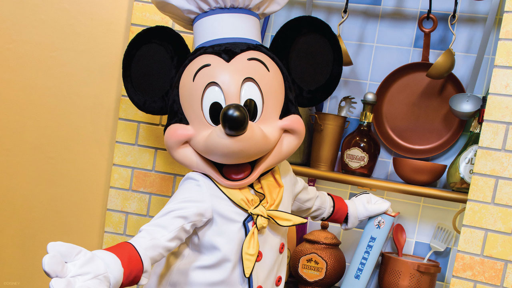
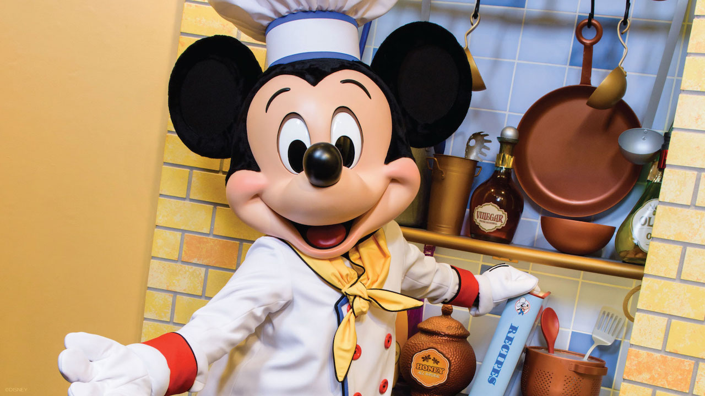

Welcome to the Lion King Theme Restaurant! At Lion King, we take pride in offering an unforgettable dining experience inspired by the timeless and beloved classic, The Lion King. Step into the African savannah and embark on a culinary journey that celebrates the spirit of adventure, camaraderie, and the circle of life. Lion king was born out of a passion for creating a one-of-a-kind dining destination that pays homage to the iconic the Lion King franchise. We believe in bringing joy, nostalgia, and excitement to our guests by immersing them in the rich and vibrant world of Simba, Nala, Timon, Pumbaa, and the rest of the unforgettable characters.
From the moment you step through our doors, you'll be transported into the heart of the Pride Lands. Our meticulously designed restaurant features stunning African-inspired decor, bringing the landscapes of the savannah to life. Greeted by life-size replicas of the characters, you'll feel as though you've joined the pride and are part of the story.
Staff
 
